5．进一步的特殊函数
椭圆不定积分是一类新的超越函数。随着18世纪分析方面工作的发展，得到了更多的超越函数，其中最重要的是Γ函数。Γ函数是从插值理论与反微分这两个问题的研究中产生的。斯特林（James Stirling，1692—1770）、丹尼尔·伯努利和哥德巴赫（Christian Goldbach，1690—1764）考虑了插值问题。问题提给了欧拉，他在1729年10月13日给哥德巴赫的一封信中宣布了他的解答(34)。1730年1月8日的第二封信引入了积分问题(35)。1731年欧拉在一篇文章“论级数……”(36)中发表了这两方面的结果。
欧拉研究的插值问题是对非整数的n，给出n！的意义。欧拉注意到
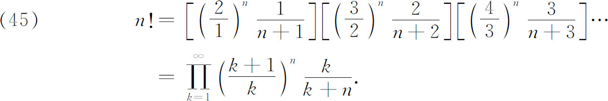
如果将这无穷乘积中的公因子约去，上面的等式形式上看来是正确的。然而，这个n！的分析表达式却不像基本定义
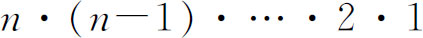
那样，它对所有的n（除了n是负整数外）都有意义。欧拉注意到对n＝1/2，上式右端经过一些改写后，就产生沃利斯无穷乘积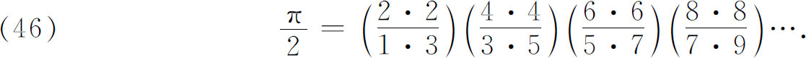
采用后来勒让德引入的记号
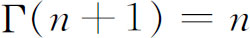
！，欧拉还证明了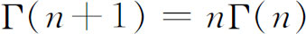
，从而得到了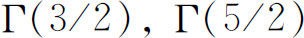
等。欧拉曾用（45）作为他阶乘概念的推广。事实上，这个概念今天常用一个等价形式来引进（欧拉也给出了这个形式），即
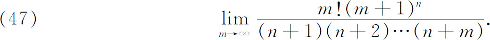
但是联系到沃利斯的结果，就使欧拉着手处理沃利斯已考虑过的一个积分，即
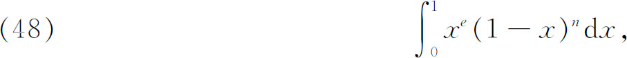
其中e与n对欧拉来说是任意的。欧拉利用二项式定理将
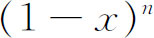
展开来计算这个积分，得到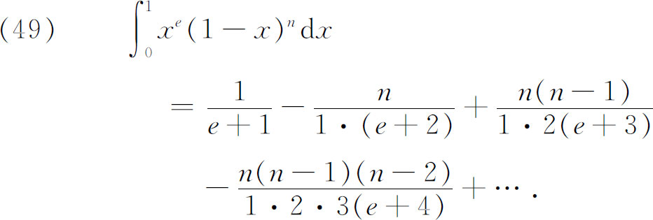
对n＝0，1，2，3，…，右边的和相应地为
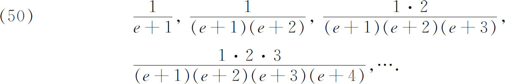
因此，对正整数n，欧拉发现
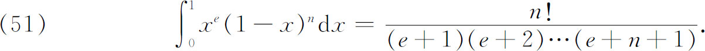
这时，欧拉找到了一个对任意n都成立的n！的表达式。用我们今天不能完全接受的一系列变换得出
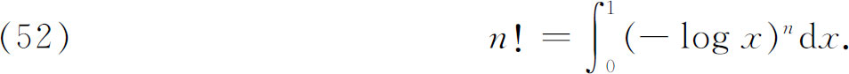
这个积分对几乎任意一个n都有意义，叫做欧拉第二积分，或按后来勒让德的叫法，称为伽马函数，用Γ（n＋1）表示。［高斯令
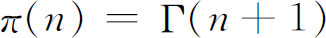
。］后来，欧拉于1781年（1794年发表）给出了它现在的形式，那是在（52）中令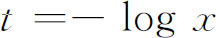
而得到的：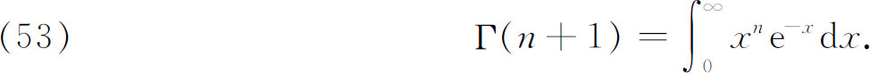
勒让德把积分（48）叫做欧拉第一积分。这个积分变成β函数的标准化形式：
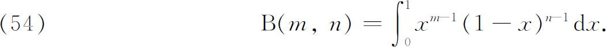
欧拉发现了这两个积分之间的关系(37)，即
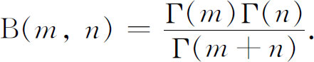
勒让德在他的《积分练习》中对欧拉积分作了深入的研究，并获得了倍量公式：
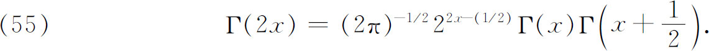
高斯在他关于超几何函数的著作(38)中研究了Γ函数，并将勒让德的结果推广成所谓叠乘公式：
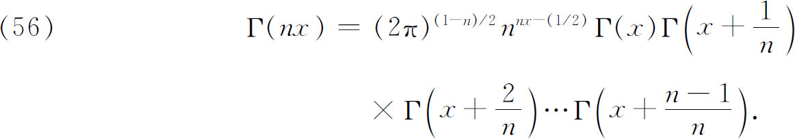